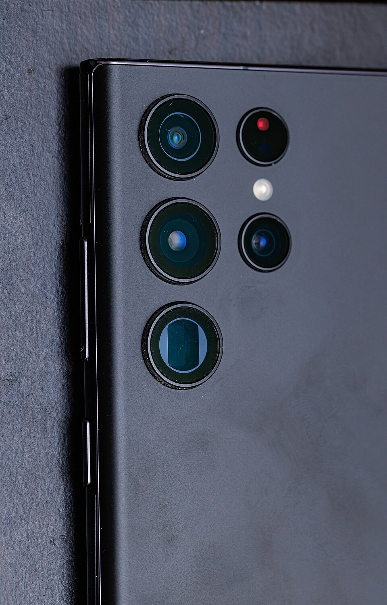

설립연도
1973년
스마트폰, 자동차, AI 서버 같은 전자제품 안에 들어가는 핵심 부품을 만드는 회사예요. 전기를 잠깐 저장했다가 내보내는 아주 작은 부품인 MLCC, 반도체 칩을 올리는 기판, 스마트폰 카메라 모듈이 대표 제품이에요. 2025년에는 AI 서버용 부품 수요가 늘어 창사 이래 최대 매출을 냈어요.
칸에 마우스를 올리거나 누르면 자세한 설명을 볼 수 있어요.
쌀알보다 작은 부품으로, 전기를 잠깐 저장했다가 일정하게 내보내 전자회로를 안정시켜요. 스마트폰 한 대에 1천 개, 전기차 한 대에 1만 개 넘게 들어가고, AI 서버에서도 수요가 크게 늘었어요.
대표 예스마트폰·서버·전기차용 MLCC
반도체 칩을 올려 메인보드와 연결해 주는 기판이에요. 특히 AI 서버용 고성능 기판(FC-BGA)이 빠르게 커지고 있어요.
대표 예FC-BGA, 서버·AI 가속기용 기판

스마트폰 뒷면의 카메라를 통째로 만들어요. 광학 줌을 위해 빛을 꺾는 '폴디드 줌' 카메라에 강해요.
대표 예스마트폰 카메라 모듈, 폴디드 줌
자동차용 MLCC와 자율주행차에 들어가는 카메라 모듈을 만들어요. 자동차는 고장이 나면 안 돼서 일반 부품보다 기준이 훨씬 까다로워요.
대표 예전장용 MLCC, 차량용 카메라
| 기간 | 매출 | 영업이익 | 순이익 |
|---|
사업마다 겨루는 상대가 달라요